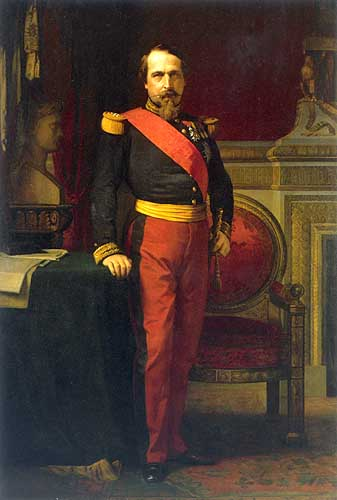

Forums galactiques > Assemblée Galactique : diplomatie officielle > La loi du plus fort ?
| talrash Respect diplomatique : 49  11/04 ETU 21:47 | Score : 0 Détails Je croi que pour votre message mon cher, il manque
"message philosophique" mon cher. Un tel discour ne peut qu'étre assez révélateur d'une réalité profonde. Je pense que c'est en effet juste, la loi du plus fort l'emporte toujours comme dans n'importe qu'elle société. Et sa, ne changera jamais tant que l'hummanite ne changera pas. | ||
| maitre yoda Respect diplomatique : 391  11/04 ETU 22:05  | Score : 1 Détails Le seul moyen de se protéger est de garder son système fermé et d'entretenir de bonnes relations avec vos voisins directs, et cela n'est pas si difficile. Ensuite, si ceux-ci vous attaquent, appellez à l'aide tranquillement, il y aura toujours quelqu'un pour vous prêter une planète le temps de récupérer les autres.
| ||
| Gwacmai Feran Respect diplomatique : 33  11/04 ETU 22:07 | Score : 0 Détails une autre méthode est d'être le premier à attaquer, c'est une technique qui fait ses preuves.
Le mieux, à mon avis, est encore de s'allier avec le commandant de plus puissant du système avec vous pour aller prendre ensemble les possessions du 3ème, cela permet de festoyer gaiement ensemble tout en ayant eu son contant de combats en attendant l'ouverture du système. | ||
| Empire Argamonien Respect diplomatique : 0  11/04 ETU 22:07 | Score : 0 Détails
Mesdames, messieurs, Le commandant darklink vient à l’instant de me prendre la totalité de mes planètes en plus de ma planète natale. Il disait au début pouvoir m’aider a me développer, et bien je puis vous dire que j’ai retenue la leçon. Je vais de ce pas revenir sous un autre compte et je puis vous assurer que quand le système de ce commandant sera ouvert, je ne lui ferait aucune pitié et le détruirait entièrement. Ce genre de personnage vil et perfide mérite le pire des châtiments. Aussi commandant Ubu, vous n’êtes plus seul dans cette lutte… A bon entendeur salut. | ||
| maitre yoda Respect diplomatique : 391 11/04 ETU 22:09 | Score : 0 Détails S'il vous a attaqué, c'est que son système est ouvert, non ?
| ||
| Gwacmai Feran Respect diplomatique : 33 11/04 ETU 22:11 | Score : 0 Détails commandant, si vous suiviez un peu, vous sauriez que le commandant ubu, ou du moins sa reincarnation, ne compte pas poursuivre le commandant darklink.
Pour ce qui est de votre vengeance, sachez qu'il a rejoint les disciples de la foi, et ayant déjà fait preuve d'une bonne dose d'ordurisme, risque de monter dans l'estime de nos dirigeants très vite. Vous aurez donc à compter sur nos forces, ou tout au moins sur les miennes pour le proteger. amicalement, jusqu'à ce que vous osiez porter la main sur l'un des notres. commandant Feran. | ||
| VorteX Respect diplomatique : 34  11/04 ETU 22:22 | Score : 0 Détails Vous me dégoutez ...
J'avoue je ne suis pas assez puissant pour vous détruire, ni meme pour vous egratignez et c'est bien cela qui me chagrinne ! Ce moment est l'un des rares ou je penses a l'extermination violentes de toute une ideologie ! On verra si vous pronerez toujours la non-vengeance etc etc BIEN SUR QUE NONS VOUS VOUS EMPRESSEREZ D'ALLER DEMANDER L'AIDE DE VOTRE COALLITION parceque a votre niveau il est normal d'en avoir une, a petit niveau, qu'est-ce que l'on a a part l'Assemblé Galactique ?!? Je sais je sais, "la loi du plus fort est la meilleur", "si tu n'est pas content vient donc te battre", "encore un qui rale et qui dérange nos vie de Nabab hors de porté et tout puissant !" ... ... ... ... ... Je m'en tape tout simplement et excusez mon language vulgaire ! Allez-y engeulez moi a cause de ca pendant que vous y etes de toute facon quesque je peux faire ? Je ne suis rien a vos yeux alors laissez moi geuler dans moin coin de vide sideral, ca soulage tellement ! | ||
| Gwacmai Feran Respect diplomatique : 33 11/04 ETU 22:26 | Score : 0 Détails Je ne compte point vous engueuler, cher commandant, juste faire quelques précisions.
Le commandant Darklink n'a en rien demandé notre aide dans ce conflit, ou je n'en suis pas informé. C'est moi même qui décide pour ma part de le protéger de mon mieux, et je pense que la coalition en fera de même tant que durera le compromis ultrème. Nous ne prônons pas la non-vengeance, bien au contraire, qu'ils se vengent, car nous ne nous gênerions pas pour en faire autant si quelqu'un nous attaquait. Pour ce qui est de ma puissance qui fait que "vous n'êtes rien pour moi", sachez que je ne suis encore qu'un assez petit commandant, qui peine a gêrer ses planètes dans 2 systèmes différents, ce qui ne m'empêche pas de me battre pour et selon mes idées. Bien à vous. commandant Feran. | ||
| Dauntain Chrysalide Respect diplomatique : 130  11/04 ETU 22:29 | Score : 1 Détails Un peu de calme et d'ouverture d'esprit, je vous en prie, VorteX. Le temps des combats perdure malheureusement au sein de cette galaxie, ce qui ne veut pas dire que vous avez le droit d'hurler ainsi a la haine. Les (bonne) reflexions se font rare, ce qui ne veux pas dire que vous devez confirmer encore un peu plus le déshonneurs de cette assemblée.
Merci d'avoir écouté. Même si cela vous fait l'effet d'un empecheur de tourner en rond. | ||
| VorteX Respect diplomatique : 34 11/04 ETU 23:01 | Score : 3 Détails Je le savais ! Je me fait houspiller parceque je hausse un peu la voie au sein de l'assemblée, je le reconnais c'est une faute ! Mais je me fait plus encore houspiller que ces Commandants qui envahissent a tour de bras, sans préavis, sans scrupules et sans honneurs et c'est moi qui suis en fautes ?
Je comprends de moins en moins les buts de cette Assemblée, si elle ne sert plus a regler le moindre probleme véritable mais seulement a critiquer la facon dont tel ou tel Commandant s'exprime alors il ne sert plus a rien d'y etre présent ! Peut-etre que le nouveau gouvernement changera quelque chose a cette ambiance hypocrite ! Gwacmai Feran, je ne parlais pas de vous en particulier mais de cette classe de la Galaxie qui se sent, a juste titre, intouchable et qui se permet pas la meme occasion les actes les plus comdanables ! Mais non ! On ne peut rien contre eux alors il faut retourner a l'Assemblé critiquer les commandants en attendant qu'il fasse des fautes d'orthographe et surtout ne jamais s'elever contre les plus forts ! Le bonheur est selon certain le fruit de la reussite apres l'effort, selon d'autre le fruit de l'effort quelqu'en soit l'issu, je me met de ce coté. Ceux qui sont de l'autre ne tenteront jamais rien de peur de ne pas y arriver mais est-ce bien le but ? Vous arriverez toujours a me critiquez, j'attends d'ailleurs de ce pas les futurs messages mais arriverez vous a renversez l'Ultrematie ? Cela ne vous interesse meme plus tellement ils sont devenu puissant ! Arretons de détourner le sujet ! Cordialement VorteX qui espere avoir écrit un message "bien comme il faut" !!! | ||
| Dauntain Chrysalide Respect diplomatique : 130 11/04 ETU 23:06 | Score : 3 Détails L'assemblée a toujours été hypocrite.
Non. Faux. Ce que je viens de dire est faux. Disons qu'elle a été hypocrite depuis l'idée d'organiser des élections pour Newdeun, il y a des temps si éloigné que seul s'en souvient les vénérables. Ce n'est pas nouveau. L'un des objectif des hydropathes est même de tailler a l'interieur et de fabriquer de toute pièce une assemblée qui pourrait prendre le releve de l'officiel. Bon sang. Cette assemblée est si chargé d'histoire qu'elle semble crouler sous le poid des guerres, des mensonges et des meurtres. Pour les nouveau, c'est dur, comme ça l'ait pour certain des anciens. Personne n'arrive vraiment a nager, tous, nous survivons dedans comme nous le pouvons ; ce n'est pas une raison (rien est une raison !) pour perdre le respect. Même si la répartie ne vous respecte pas, vous avez le devoir de la respecter comme un autre pensant, capable de réfléxion, de décision (même si c'est la mauvaise), de pitié, d'amitié. Pas comme un ennemi a exterminer. | ||
| Largo Respect diplomatique : 442  11/04 ETU 23:23 | Score : 6 Détails Je suis toutes vos interventions depuis quelques temps déjà, et je me dois de réagir.
Commençons tout d'abord par vous commandant Gwacmai Feran. Vous dites, et je vous cite: "Le mieux, à mon avis, est encore de s'allier avec le commandant de plus puissant du système avec vous pour aller prendre ensemble les possessions du 3ème, cela permet de festoyer gaiement ensemble tout en ayant eu son contant de combats en attendant l'ouverture du système." Avez-vous pensé à la suite des évènements? Une guerre en appelle une autre, surtout dans un système fermé. Selon vos dires, le monde n'est fait que de cruauté et de trahison. Ne pensez-vous que le commandant puissant profite de l'opportunité que vous lui offrez en lui accordant votre confiance pour vous attaquez? Alors s'il vous plait, commandant Feran, réflechissez un peu avant de déblatérer de telles âneries qui vous désservent au lieu de vous servir. A vous commandant Vortex. Je suis pour la liberté d'expression de chacun. Pour moi, et pour tous les Asgards, c'est un droit primordial, l'un des droits les plus importants même. Vous avez donc le droit de penser et de dire tout ce que vous voulez. C'est en confrontant les idées que les choses avancent, qu'elles changent. Alors, faites moi plaisir, ne vous taisez pas, ne vous taisez jamais, tous autant que vous êtes. | ||
| Gwacmai Feran Respect diplomatique : 33 12/04 ETU 13:21 | Score : 1 Détails commandant VorteX, j'avoue que mon vote négatif était surtout fait "a défaut", en raison de la manière dont il était écrit, et j'avoue avoir eu du mal à lire la fin. Je ne sais s'il aurait fallu que je vous mette plutôt présentation baclée... mais la finalité aurait été la même.
commandant Largo, c'est là qu'interviennent les relations diplomatiques. Pour avoir confiance en cet autre commandant, vous pouvez vous lancer dans divers échanges commerciaux ou même de simples discussions assez sympathiques. Cela ne vous assure pas de son amitié, mais peut y contribuer. Et même si celui-ci vous attaque, ma foi, il vous suffit de vous y préparer. On ne devrait jamasi oublier de surveiller ses arrières, sauf cas particuliers... | ||
| Chil powo Respect diplomatique : 10  12/04 ETU 23:20 | Score : 0 Détails Je me permet de revenir voir comment les choses avances ...
Hey mais ?? ; J'ai lu le message du commandant Vortex sans aucuns problèmes !! Rah !! Surement a cause de ma bonne foie !! | ||
| Gwacmai Feran Respect diplomatique : 33 13/04 ETU 07:58 | Score : 0 Détails Je vous prie de ne pas diffamer à mon propos, je ne vote pas sur les messages en fonction de l'appartenance du commandant à un groupe. J'ai déjà mis des bons points a des hydropaths et des mauvais points a des ultrèmes.
J'ai réellement trouvé ce message brouillon. |
Forums galactiques > Assemblée Galactique : diplomatie officielle > La loi du plus fort ?